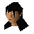
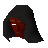

Merlin's Crystal
Scripts in
scripts/quests/quest_arthur/NPCs involved

Morgan Le Faye
Thrantax The MightyItems involved
Involvement is derived from identifiers referenced by the quest scripts.
scripts/quests/quest_arthur/
Morgan Le Faye
Thrantax The MightyInvolvement is derived from identifiers referenced by the quest scripts.